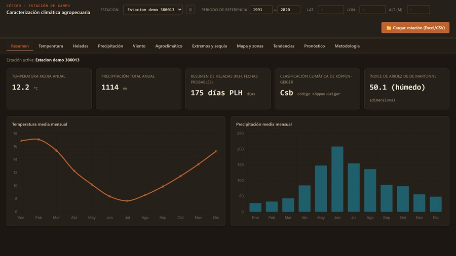
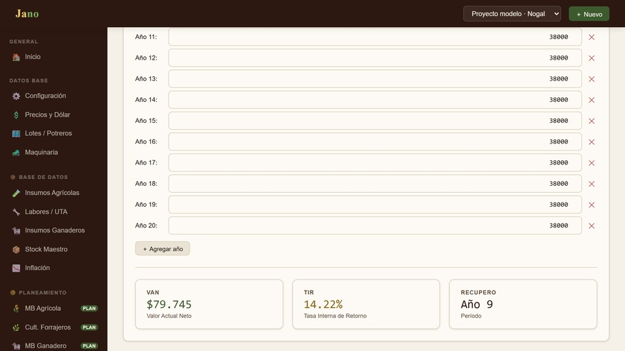
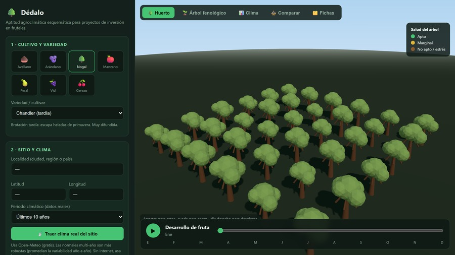
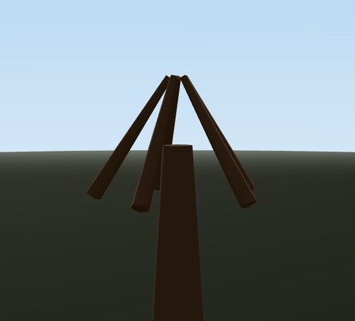
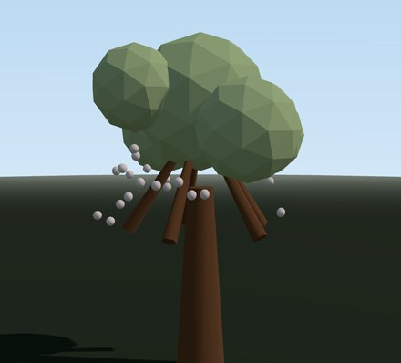
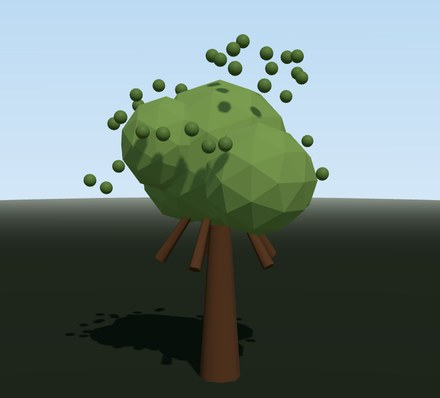
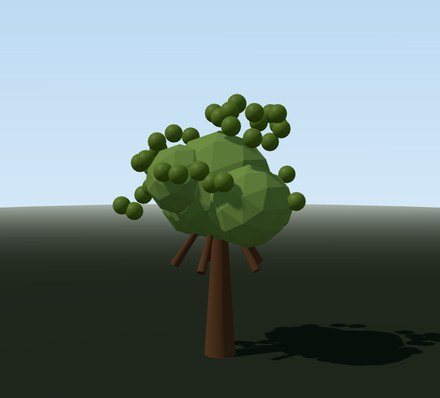

Análisis técnico
Aptitud del suelo, agua disponible y su calidad, clima de la zona y tecnología aplicable. De acá sale el rendimiento esperado, el número del que dependen todos los cálculos que vienen después.
Evaluación de proyectos agropecuarios
Antes de que inmovilices capital en un campo, alguien tiene que decirte con números si conviene, cuánto tarda en volver y en qué escenario deja de cerrar. Eso es lo que hacemos, y te lo entregamos por escrito.
Argentina · Chile · Uruguay · Paraguay
Quiénes somos
Un proyecto agropecuario tiene varias aristas: la técnica, la económica-financiera, la administrativa, y el ambiente donde va a desarrollarse. Cada proyecto es un mundo aparte, y para entenderlo hace falta una mirada experta que mida cada variable de riesgo y arme una planificación sólida.
Somos un grupo de ingenieros agrónomos y zootecnistas distribuidos por el Cono Sur. Eso nos deja familiarizados con las distintas zonas climáticas y con producciones tanto tradicionales como no convencionales, siempre con el acompañamiento técnico de quien conoce esa zona por dentro.
Por eso cada proyecto se arma a medida. No entregamos un modelo estándar con los números cambiados: el alcance, el horizonte y las variables que se analizan salen de lo que ese proyecto necesita responder.
Por qué no publicamos nombres de clientes. La información de un proyecto le pertenece al productor. Publicamos el método, no el cliente: sin nombres, sin superficies y sin resultados.
Método
El análisis técnico lleva el proyecto al terreno, y ahí los factores ambientales actúan como limitantes: son ellos los que marcan la producción esperada. Ese número es el que alimenta los dos análisis que siguen, así que del primero depende todo lo demás. Por eso el primero se hace a campo.
Aptitud del suelo, agua disponible y su calidad, clima de la zona y tecnología aplicable. De acá sale el rendimiento esperado, el número del que dependen todos los cálculos que vienen después.
Al rendimiento esperado le aplicamos precios de referencia y le restamos los costos directos de implantación y manejo. Sale el margen bruto, en la unidad que manda en cada caso: por hectárea, por cabeza o por litro.
Flujo de fondos a lo largo de toda la vida del proyecto, medido con VAN, TIR y período de repago, y comparado contra el costo de oportunidad: lo que ese mismo dinero rendiría en la mejor alternativa disponible.
Un modelo sin supuestos declarados es una opinión con decimales. Esto es lo que fijamos por escrito en cada informe, antes del primer número.
El entregable
Primero hacemos la entrevista con las partes interesadas. De esa reunión sale el plan de acción y, una vez fijado el norte, se entrega un resumen del modelo de negocio que muestra la factibilidad del proyecto. Si decidís seguir, y una vez acordados los honorarios, se entrega el proyecto llave en mano, que puede incluir o no el asesoramiento posterior según el caso.
Todo el análisis detallado vive acá. Tocá cualquier capítulo para ver qué lleva adentro.
Flujo acumulado descontado de una inversión frutal. Movés el precio y el rinde y ves dónde deja de cerrar. Ejemplo ilustrativo, no es tu proyecto.
Lo que hay detrás del informe
No usamos planillas prestadas. Cuando el cálculo que necesitaba un proyecto no existía, lo escribimos. Así se sostienen los números que después firmamos.

Céfiro
Antes de proyectar un rinde hay que saber qué tolera el sitio. Temperatura media, lluvia anual, días libres de helada, clasificación climática e índice de aridez, calculados sobre treinta años de serie.
Sostiene El análisis técnico: los factores ambientales que actúan como limitantes y marcan la producción esperada.

Jano
El flujo de fondos año por año, con su valor actual neto, su tasa interna de retorno y el año en que la inversión termina de recuperarse. Es el número del que depende la decisión.
Sostiene El análisis financiero: VAN, TIR y período de repago, contrastados contra el costo de oportunidad del capital.

Dédalo
Especie, variedad y sitio: el monte se arma en tres dimensiones y se lo hace pasar por el año para ver cómo responde al clima del lugar. Ver el proyecto terminado antes de poner un peso.
Sostiene El planeamiento de la producción: el diseño del monte y la elección de la variedad.
No dibuja un árbol: lo hace vivir el año. Mover el mes cambia lo que el monte puede sostener, y ese es el número que después entra al flujo de fondos.

Julio · reposo
El monte sin hoja. El invierno define las horas de frío que la variedad necesita para brotar pareja.

Noviembre · brotación
Chandler brota tarde, y eso la salva: cuando abre, las heladas de primavera ya pasaron.

Enero · fruta cuajada
Plena copa. Acá se juega el rinde: lo que el árbol logre sostener alimenta todo el análisis.

Abril · cosecha
La nuez lista. Un mes que factura contra once que gastan: por eso el repago tarda.
Ninguna de las tres está a la venta. Las escribieron los mismos profesionales que firman los informes, y existen por una sola razón: que un proyecto no se decida con una planilla que no sabe de heladas ni de años improductivos. Cuando un proyecto pide un cálculo que la herramienta no hacía, se agrega.
Cómo decidimos
«La alternativa de mayor margen bruto exigía una inversión que el productor sólo podía afrontar endeudándose. Le recomendamos la que rendía menos.»
Caso representativo. La metodología es la que se aplica; la situación se publica sin nombres, sin superficies y sin resultados, con el criterio de confidencialidad que aplicamos a todos los proyectos.
Cómo trabajamos
No hace falta contratar todo de entrada. Cada etapa cierra en sí misma y la siguiente sólo se justifica si la anterior dio que sí.
Responde si el proyecto conviene y bajo qué condiciones, con el modelo de negocio que lo sostiene. Es la puerta de entrada y, muchas veces, donde termina el trabajo: si la respuesta es que no, te ahorraste la inversión y el resto del estudio.
Si la factibilidad dio que sí, acá se desarrolla el planeamiento completo de la producción: el informe detallado, con el flujo de fondos, la evaluación financiera y la documentación lista para presentar ante un banco, un socio o un directorio. Es lo que se firma y se defiende.
Con el proyecto en marcha, comparamos lo planificado contra lo que efectivamente pasó, con datos reales y no estimados. Muestra dónde se desvió el resultado y por qué. Se contrata aparte y sólo si el proyecto lo justifica.
Cuánto vale un campo, por los dos caminos que usa la tasación rural: capitalizando la renta que la tierra es capaz de generar, y comparándolo con operaciones reales de la zona. El cruce da un valor defendible con números, para comprar, vender o respaldar una operación.
Dos zonas con el mismo rinde promedio pueden tener riesgos muy distintos: lo que las diferencia es la variabilidad. Trabajamos sobre series históricas de rindes y precios para saber en qué escenarios el proyecto sigue cerrando, y desde dónde empieza a ser una apuesta.
Rubros
No evaluamos cualquier cosa. Estos son los sistemas productivos que conocemos por dentro, con la variable que define el resultado en cada uno.
Frutales extensivos
Frutales intensivos
Producción intensiva
Ganadería y leche
Condiciones
Cada proyecto tiene una escala, un rubro y una urgencia distintos, así que el trabajo se arma a medida. El camino, en cambio, es siempre el mismo.
Por WhatsApp o por correo, contándonos qué proyecto tenés en mente. Con eso alcanza para empezar.
Conversamos para entender el proyecto y tomar el pedido. Acá se define qué tipo de evaluación necesita, y si es un trabajo para nosotros. No tiene costo y no compromete a nada.
Armamos un plan personalizado según lo que el proyecto necesite, con el alcance y el precio por escrito. Recién ahí decidís si seguimos.
Si ya tenés el campo
No hace falta que vengas con un proyecto armado. La mayoría llega con una sospecha: que hay un sector que no está dando lo que podría, que la actividad de siempre ya no cierra como antes, o que el banco pide números que nadie preparó.
Empezamos por el mapa de ambientes de tu establecimiento y las alternativas posibles para cada sector. De ahí sale, con margen bruto y con flujo de fondos, qué conviene hacer y qué conviene dejar como está.
Contame qué campo tenésContacto
La primera conversación es sin cargo y sirve para entender el proyecto antes de hablar de números. Si no es para nosotros, te lo decimos ahí mismo.
Para que la primera respuesta sirva, contanos:
El botón abre WhatsApp con el mensaje ya empezado. No pasa por ningún servidor nuestro ni de terceros.